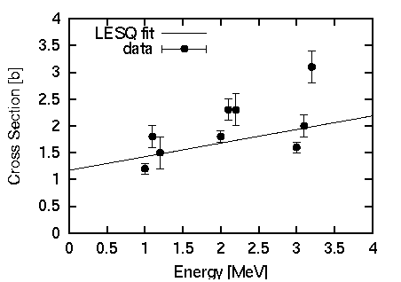
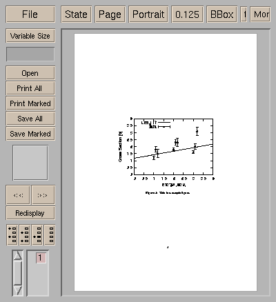
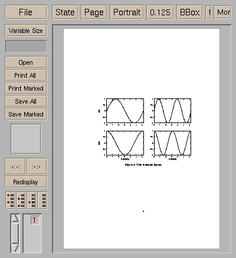

- not so Frequently Asked Questions -
update 2004/9/16
|
|
- not so Frequently Asked Questions - update 2004/9/16
|
|
not so FAQ |
After Plotting (No.1)I want to put a figure in my TeX document.Gnuplot has a latex terminal which is capable of generating a PicTeX graph. This terminal, however, tends to makes a lot of data points to show a graph, and sometimes you cannot process it with the TeX system because a computer memory is not enough. An easy way to include your graph into the TeX document, make the graph in an EPS format and use the LaTeX graphics (graphicx) package. Firstly, make a figure with gnuplot, and use the enhanced EPS terminal to make an EPS file. gnuplot> set term postscript eps enhanced gnuplot> set output "test.eps" gnuplot> set key left top gnuplot> set size 0.5,0.5 gnuplot> set xrange [0:4] gnuplot> set yrange [0:4] gnuplot> set xlabel "Energy [MeV]" gnuplot> set ylabel "Cross Section [b]" gnuplot> set linestyle 1 lt 1 gnuplot> set linestyle 2 lt 1 pt 7 gnuplot> # for gnuplot ver.4 gnuplot> # set style line 1 lt 1 gnuplot> # set style line 2 lt 1 pt 7 gnuplot> plot 0.2536*x+1.1717 title "LESQ fit" \ > with lines linestyle 1,\ > "test.dat" usi 1:2:3 title "data" \ > with yerrorbars linestyle 2 If you don't change the figure size, letters in the generated EPS become too small in comparison with the graph. To make them larger, use the set term option to specify the larger font, or use the set size command to make the whole figure smaller, just like the example above. The font size is the same even you change the size of figure, so that the letters become larger relative to the graph. When symbols in your figure have error bars, the PostScript driver draws the bars with the specified line type. If those are not the number 1 (solid line), gnuplot the error bars with draws dotted or dashed lines. To avoid this, use linestyle to set the linetype lt=1 and change the symbol number pt. To paste a graph in your TeX(LaTeX2e) document, use graphics package. \includegraphics{ EPS file } command inserts the figure at that location. The EPS file name is specified at EPS file. If you want to chance the figure size, use \resizebox{X size}{Y size} command, which enlarges or shrinks the figure size. If you want to keep the aspect ratio, put "!" into the X or Y size. In the next example, a figure is inserted into the figure environment, a caption is given, and the figure width is set to 120mm.
\documentclass{article}
\usepackage{graphics}
\begin{document}
\begin{figure}
\begin{center}
\resizebox{120mm}{!}{\includegraphics{test.eps}}
\caption{This is a sample figure.}
\label{test}
\end{center}
\end{figure}
\end{document}

 I want to merge several figures into one figure.There are several ways to merge some figures, for example, use multiplot, combine EPS figures into one drawing. Maybe the simplest way to do is to use a LaTeX tabular environment, and arrange the EPS figures. When you have 4 figures, and those are aligned into 2x2 matrix. The Y label appears only the left figures, while the lower figures have X label. In addition, a caption is given for 4 drawings, namely those 4 plots are regarded as one figure. Firstly, those 4 figures are prepared by 4 different EPS files. At that time, all figures should be in the same size. As an example, here shows the graphs of y=sin(x), cos(x), sin(2x), and cos(2x). gnuplot> set term postscript eps enhanced gnuplot> set lmargin 5 gnuplot> set bmargin 3 gnuplot> set rmargin 2 gnuplot> set tmargin 2 gnuplot> set size 0.5,0.5 gnuplot> set xrange [0:2*pi] gnuplot> set yrange [-1:1] gnuplot> set output "test1.eps" gnuplot> set xlabel "" gnuplot> set ylabel "sin x" gnuplot> plot sin(x) notitle gnuplot> set output "test2.eps" gnuplot> set xlabel "" gnuplot> set ylabel "" gnuplot> plot sin(2*x) notitle gnuplot> set output "test3.eps" gnuplot> set xlabel "X [nodim.]" gnuplot> set ylabel "cos x" gnuplot> plot cos(x) notitle gnuplot> set output "test4.eps" gnuplot> set xlabel "X [nodim.]" gnuplot> set ylabel "" gnuplot> plot cos(2*x) notitle Those EPS figures are inserted into the tabular environment, and aligned.
\documentclass{article}
\usepackage{graphics}
\begin{document}
\begin{figure}
\begin{center}
\begin{tabular}{cc}
\resizebox{60mm}{!}{\includegraphics{test1.eps}} &
\resizebox{60mm}{!}{\includegraphics{test2.eps}} \\
\resizebox{60mm}{!}{\includegraphics{test3.eps}} &
\resizebox{60mm}{!}{\includegraphics{test4.eps}} \\
\end{tabular}
\caption{This is sample figures.}
\label{test4}
\end{center}
\end{figure}
\end{document}

If you want to make one PS file which contains several figures, use the tabular environment (not table float), and cut off with the dvips command line option -pp . With the -E option, you can make another EPS file which contains several figures. See the manual of divps. Of course the same thing you can do with a drawing tools like Tgif or commercial softwares. |